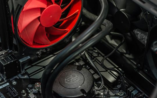

Common PC System Unit Problems
BSOD (Blue Screen of Death)
There is nothing scarier than working on an important document only to be greeted by the BSOD (Blue Screen of Death). This STOP error is almost certainly hardware-related and unfortunately, could signal significant system failures.
However, it’s not necessarily hopeless. In fact, a simple reboot could be all you need to fix the issue.
In most cases, however, further diagnostics are necessary to find the cause of the issue.
If the blue screen appears, you’ll see a line of white text that identifies the problem your computer is having. You can easily look these codes up online to narrow down the issue and work toward a solution or seek assistance.
overheating CPU
There are many causes and reasons for overheating computers, using it for a over time, dust, blocking the fan affects overheating. Inspect the vents and fan for dirt or other signs of blockage and also avoid frequent and prolonged use of the computer so that it does not overheat
computer won't start

fan noise
 Your computer's fan makes noise because the inside of the computer needs air to circulate and also the reason why computer’s fan makes noise because of dust Check and clean the fan when it is dirty because it will cause your computer’s fan to make noise
failing SSD
Sometimes unplugging and re plugging the the ssd cord and let your pc stand by in the BIOS for and hour or an half will help you fix the problem, but sometimes when your SSD fails you must replace it with a new one if your SSD is already too unhealty.
The Screen is Frozen
When you computer freezes, you may have no other option than to reboot and risk losing any unsaved work. Freezes can be a sign of insufficient ram, registry conflicts, corrupt or missing files, or spyware. Press and hold the power button until the computer turns off, then restart it and get to work cleaning up the system so that it doesn’t freeze again.
Computer is Slow
 If your computer is slower than normal, you can often fix the problem simply by cleaning the hard disk of unwanted files. You can also install a firewall, anti-virus and anti-spyware tools, and schedule regular registry scans.
External hard drives are great storage solutions for overtaxed CPU’s, and will help your computer run faster.
If your computer is slower than normal, you can often fix the problem simply by cleaning the hard disk of unwanted files. You can also install a firewall, anti-virus and anti-spyware tools, and schedule regular registry scans.
External hard drives are great storage solutions for overtaxed CPU’s, and will help your computer run faster.